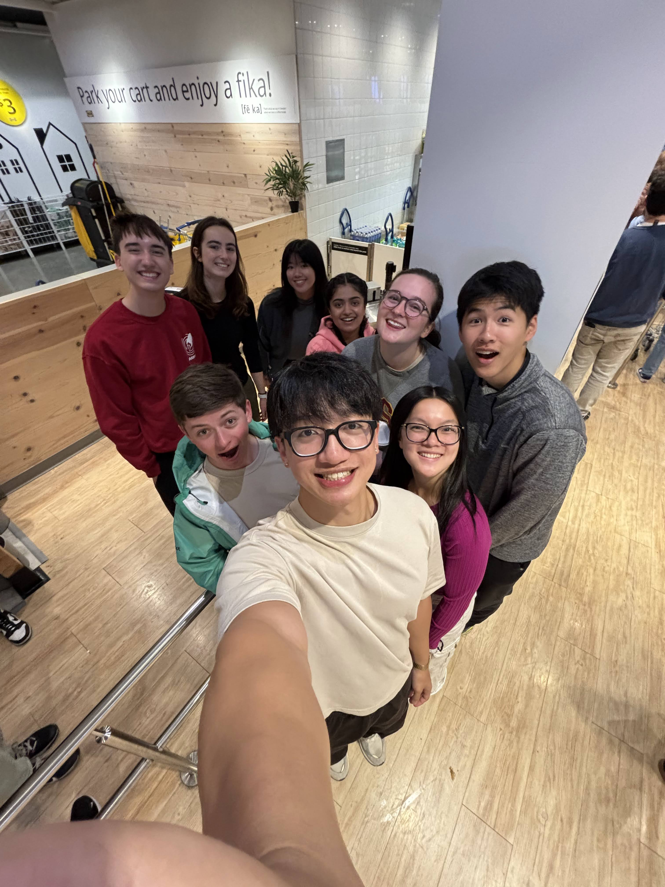

Future
My first year at USC is coming to an end soon, and it has gone by too fast. I still remember moving into my room full of hope and ambition. My hopes and dreams for this year did not come to fruition, but I would not change that, which is why I am hesitant to hope for anything too specific. Whatever happens happens, and I just go with the flow. I do hope that I savor the time that I have in college before I am shipped off into the real world without a community to belong to. There are more memories that I hope to make and I just want to enjoy the moment while it lasts.
